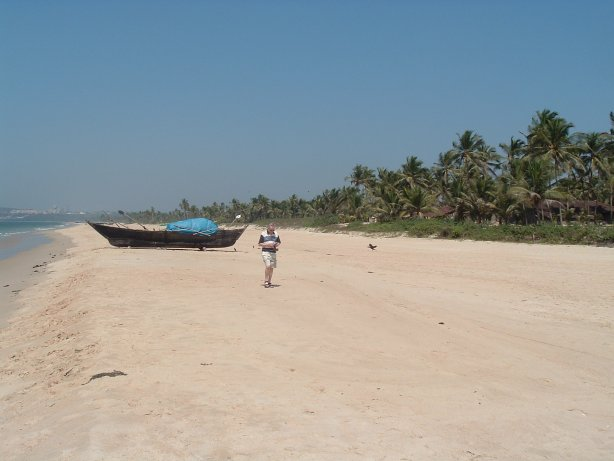
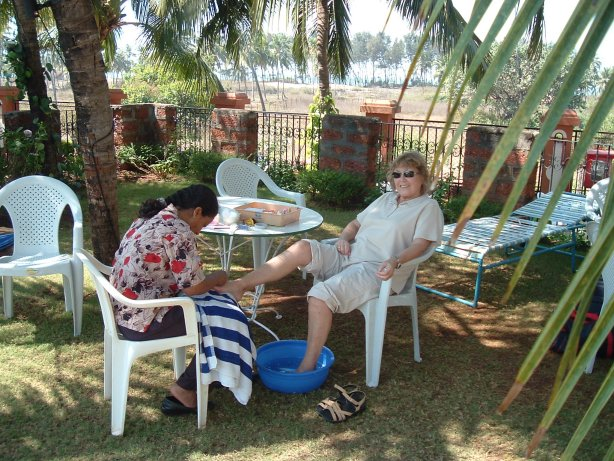

Southern India Tour. - February 2005
Though its borders are uncertain, there’s no doubt that South India, the tapering tropical half of this mighty peninsula, differs radically from the landlocked north. Stepping off a winter flight from foggy Gatwick, the contrast is immense. The region’s heavy rainfall means that lush paddy fields and palm groves patchwork the sun-bleached volcanic soils during all but the hottest months. But under a sun whose rays feel concentrated by a giant magnifying glass, the ubiquitous colours of South India – of silk saris, shimmering classical dance costumes, roadside political posters and frangipani flowers – radiate with a life of their own.
South India’s three mightiest rivers – the Godavari, the Krishna and the Kaveri – and their countless tributaries, flow east across a low, fertile alluvial basin that has been inhabited as long as anywhere in the subcontinent. Separated from the prehistoric Indus valley civilizations of the northwest by tracts of barren hills, the earliest South Indian societies are thought to have evolved independently of their northern cousins. Periodic invasions – from the marauding Muslims whose descendants would later erect the Taj Mahal, to the evangelizing, pepper-hungry Portuguese and ineffectual French – left their marks on the territory referred to in some of India’s oldest inscriptions as Dravidadesa, "Land of the Dravidians". None, however, not even the ruthlessly efficient British, ever fully subjugated the south. As a result, traditions, languages and ways of life have endured intact here for more than two thousand years – a fact that lends to any journey into the region a unique resonance.
The persistence of a distinctly Dravidian culture in part accounts for the regionalism that has increasingly dominated the political and cultural life of the South since Independence in 1947. With the exception of Goa, a former Portuguese colony, – Karnataka, Kerala, Tamil Nadu and Andhra Pradesh were drawn along linguistic lines. Each state boasts its own distinctive styles of music, dance, architecture and cuisine, not to mention religious cults and dress. Moreover, attempts by New Delhi to homogenize the country by imposing Hindi, the most widely spoken language in the North, as the medium of education and government, have consistently met with resistance, stimulating support for the regional parties whose larger-than-life leaders beam from giant hoardings in every major town and city.
February 9th, 2005
At 9.45 pm, Valerie, Marcelo and I set off from home to Gatwick Airport. Once there we checked in. There was only the one flight from Gatwick that night. Ours, and there were only 30 more people to turn up. It was to be a Boeing 767 series 300 seating 315 people. The airport was all closed up, like a morgue. Marcelo passed the time by taking out a funnel and several little plastic whisky bottles. He proceeded to fill them from a large thermos type bottle. He said they would put us in good stead for the journey ahead. In fact they were a godsend for the first week’s tour, till the whisky ran out!
We left Gatwick on time at 1.15 am on February 10th. The flight was cramped and boring. The first of two meals was not what I expected of Britannia. An uncooked pepperoni pizza. I ate it anyway, it was quite tasty and I was hungry. The second meal was somewhat better. From the centre 4 seats you could not see much, or indeed anything apart from the fact it was getting light, and the plane ploughed ever onwards. I tried to sleep, but that was a waste of time. Just could not get comfortable. We arrived on the tarmac at Goa 9 hours later. It was 3.20 pm local time and the temperature was 100°F. There was a bit of palaver as we filed through the immigration with fans humming. Marcelo is not keen on bureaucracy at the best of times. Goa is a military airport so there was a fair bit of security. I wondered what was in store for us as we waited our turn to claim our luggage. As we had to pay for our meals etc., on the first week I thought I may as well change the English money I had brought with me. £100.00 (I should have waited till I got to the hotel where it was 81RPs for £1.) The kiosk "Get your money here" offered 77.7RPs for £1, so I was given a bundle of 1000 10RPs, two bundles of 50RPs a bundle of 100RPs and a load of loose notes. Just like being issued with the bank to start a game of monopoly. You needed a
bag for all that money on it's own!
So this is India! Belinda was there to meet us and had a pre-paid taxi booked. Marcelo and I fought off the many porters except for one who rigidly kept his hand on our trolley. We told him several times "no, thank you" but he kept right on. We then got in the cab and didn't give him a tip as he didn't in fact do anything.
It seemed a bit mean and he seemed a little hurt. - but we DID tell him!
The first surprise was that all the signs were in English, and that they drove on the left. The roads were narrow and there were lots of mopeds and bicycles, not to mention goats and cows everywhere. No pavements either, just dust either side of the tarmac, then palm trees, houses or just sheds
for the animals. The soil was very red. Redder than Cornwall, and very well cultivated. Every time we approached another road user the horn was sounded twice - 'beep beep' as if to say we're coming you'd better not wobble! In all the journeys across Southern India, never was there a moment when I thought we might collide with anything. Everyone moved like liquid going down a drain, all quite orderly in its own muddled way.
Noticeably, no road rage.
After about twenty minutes driving, we turned off the main road into a long straight road leading past a few shops, and then turned off again to a little track where an arrow pointed to "Heritage Village". We seemed to be entering the jungle. Tall palm trees on either side, some chickens and even some pigs and a few houses of varying types and styles. Over a level crossing, and there it was. The hotel entrance. Quite secluded. We were met by a committee. A very young lady who put a garland around our necks, and another who dabbed a pink dot on our forehead. A smart and attractive receptionist came across and invited us to sit in the comfortable wicker arm chairs, and she helped us complete the hotel registration forms. It seems in India everything must be done in triplicate. Receipts for everything. Another notable thing throughout was the neat and rather old fashioned handwriting. Something we seem to have lost at home nowadays.
The formalities completed, we were shown to our rooms. Quite nicely appointed and each with a little balcony with a table and chair. After that we ventured to the bar and tried the 'free' beer. Very acceptable The bar is open from 11.00 am till 11.00 pm and all you need to do is walk up and ask. All the drinks were the 'local' variety, and should you insist on a 'Teachers' or Gordon's Gin, the there was a charge. Marcelo and I mostly stuck with the beer during the day, and I had a whisky (local - free) before going to bed. You could not have drunk two! In all the time there, I did not see anyone abuse the 'free' drinking. Before dinner, Valerie
Marcelo and I walked down to the beach at the rear of the hotel past the tennis courts and gardens. On the threshold of the beach we were greeted by
a girl offering tee shirts and saris etc., Sarah, a twenty year old, I found out later and Michael another trader from a hut further along the beach. We explained we had just arrived and had no money with us, but would visit them after our weeks touring.
It was later explained to us that in Southern India each state, or county speaks it's own language, and an Indian from another county cannot be understood in the neighbouring county, therefore they all learn English and it is the common language all over India. That is why all the road signs and notices were in English. Not only for our benefit, but for theirs too!
After a really excellent dinner from a choice of about 20 dishes, culminating with a banana soufflé, and a whisky by the pool listening to an excellent group, I made the first move to try out the comfort of a bed following the sleepless night in the
Boeing 767. - I slept like a baby!
The next morning, Marcelo and I wandered down to the beach again. I wanted to photograph the fishing boat as a reference for any future painting I might feel inclined to do. Valerie sat by the pool in the shade of the palm trees, with a beer and had a pedicure and nail varnishing job done. As we walked back from the beach, Marcelo asked if the sand was hot. It was white sand and it was quite hot, although as we got back towards the tennis courts the sand was redder and I was forced to fling myself over and put my flip flops back on. It was hot! Then we went to our room and packed one large suitcase between the three of us and then went and had lunch. (Baked Alaska to finish this time - wow!! - pretty good chef I'd say). I had to buy a little padlock for my case as the hotel did not want to store a case that was not locked. We then took a taxi to the airport to catch our plane for the flight to Bangalore. The aircraft was a 58 seater. A high wing monoplane that cruised at 20,000 ft and at 530 kmp. A much more comfortable flight with leg room and a meal served during the 1 hour.20 min. flight. We landed and were taken to the Monarch Hotel in the main part of Bangalore. - Follow the links below for a day by day account of our tour.
 
|